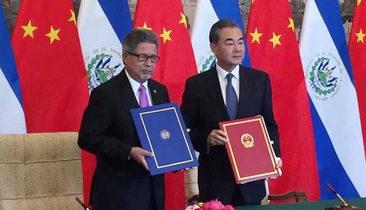

En una cadena nacional sorpresiva, el presidente de la República, Salvador Sánchez Cerén anunció el rompimiento de relaciones diplomáticas con Taiwán, luego de 85 años, y el establecimiento de las mismas con República Popular China.
Sánchez Cerén anunció en su mensaje que en ese momento el canciller salvadoreño Carlos Castaneda, el primer designado presidencial y secretario general del FMLN, Medardo González, y el secretario de asuntos legislativos y jurídicos de la Presidencia, Rubén Alvarado, estaban en misión oficial para anunciar la firma de un comunicado conjunto sobre el establecimiento de las relaciones diplomáticas con la República Popular China. “Este es un paso a la dirección correcta, permitirá grandes beneficios para el país y brindará oportunidades a nivel personal a cada uno de ustedes”, afirmó Sánchez.
El Salvador y China instalarán inmediatamente un mecanismo de diálogo entre representantes de ambos países para “identificar potencialidades” en comercio, inversión, cooperación, turismo, apoyo a la micro y mediana empresa, afirmó el Presidente. Los estudiantes becarios que se encuentran en Taiwán serán trasladados a China. “Asegurando sus oportunidades de estudio en universidades de primera calidad”, prometió Sánchez.